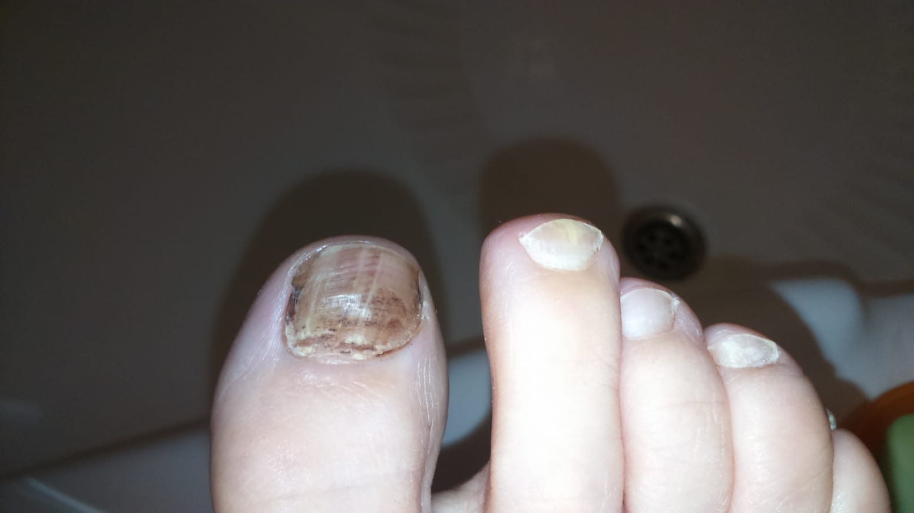
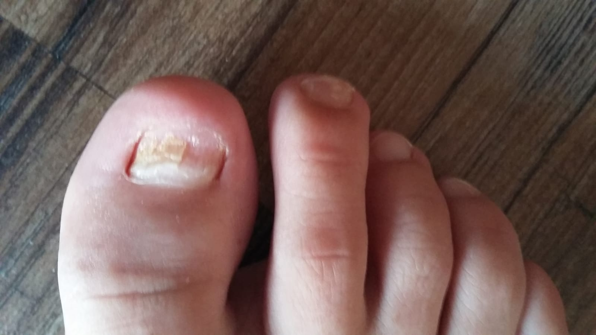
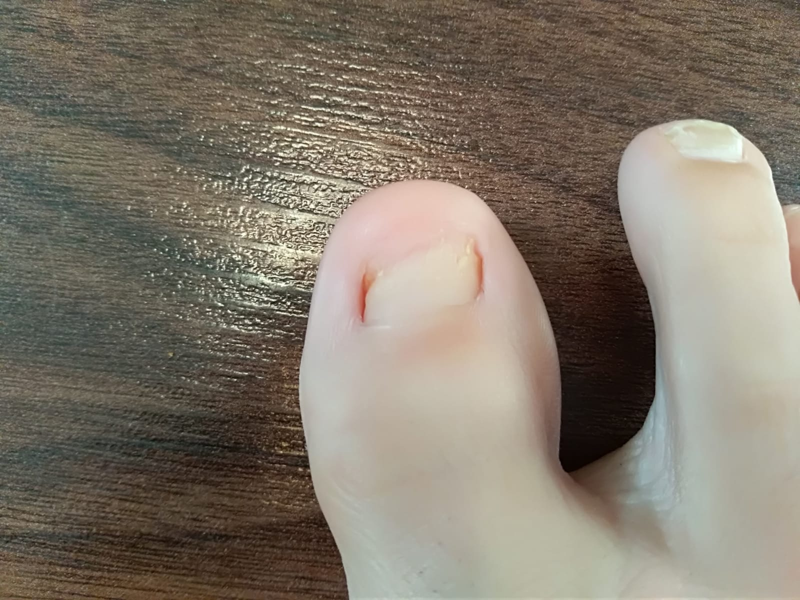

Biorezonance je moderní technologie, která se stává stále
populárnější mezi lidmi, kteří chtějí zlepšit své zdraví a životní
styl. Jedná se o neinvazivní metodu, která se zaměřuje na
harmonizaci bioenergetického pole těla.
Zkušenosti s biorezonancí jsou velmi pozitivní a lidé, kteří ji
vyzkoušeli, často hovoří o tom, jak se jim zlepšila jejich pohoda a
vitalita. Biorezonance může pomoci odstranit blokády v energetickém
poli těla a přinést tak pocit uvolnění a klidu.
Je důležité si uvědomit, že biorezonance není léčebná metoda a nemá
být nahrazována tradiční lékařskou péčí. Nicméně, jako doplněk k
léčbě může být biorezonance velmi užitečná a mnoho lidí se jí obrací
za pomocí při různých zdravotních problémech.
Celkově lze říci, že biorezonance je fascinující technologie s mnoha
pozitivními účinky na lidské zdraví a pohodu. Doporučuji ji
vyzkoušet každému, kdo hledá nové způsoby, jak zlepšit svůj životní
styl.
V případě neúspěchu do 30 dnů druhé sezení zdarma.
Od 5 let se léčím se sníženou funkcí štítné žlázy a z toho vyplývajícími potížemi. Když mi bylo 20 let během týdne se u mě začala projevovat neúměrná únava,která neustupovala. Budila jsem se nevyspalá jako po flámu, silou vůle jsem zvládla přednášky a školu, odpoledne jsem došla domů a byla jsem schopná jen spát. V podstatě půl roku jsem prospala. Nikdo mi nebyl schopný pomoct ani najít příčinu. Po půl roce se to trošku zlepšilo,ale i přesto jsem fungovala trochu jako robot na plnění povinností. Přesto,že jsem experimentovala se stravou,různými doplňky stravy i pohybem - nic nepomáhalo. Výsledky krve nic neukazovaly. Časem se únava zlepšila,ale stav se zhoršoval vždy při stresových situacích.
Když jsem dokončovala školu. Zdraví se mi zhoršilo a bylo to vážně zlé. Ráno jsem se probírala k bdělému stavu 3 hodiny, pak vlna obrovské únavy kolem 11 hodiny a odpoledne domů a spát. Pravděpodobně nikdo v práci nic nepoznal,protože jsem o tom ani nemluvila. Možná to někdo mohl zaznamenat podrážděností nebo smutkem. V září minulého roku,když bylo po obou studiích jsem se rozhodla,že se zaměřím hlavně na zdraví. A tak se stalo-dostala jsem se na biorezonanci, začala jsem řešit i lymfatický systém.
Už po 1. sezení jsem se po xletech vyspala tak,že jsem se cítila vyspanější a přes den bdělejší. Další sezení už jsem se cítila lépe a lépe. Protože jsem měla potíží více chodila jsem na biorezonanci většinou 1x měsíčně. Teď už je to rok a když se ohlédnu v čase, jsem teď zdravotně úplně někde jindě. Začala jsem normálně spát a únava stoupila do pozadí.Dá se říct,že mě paní Suchanová vrátila mezi živé lidi, protože jsem si posledních 10 let připadala spíše jako polomrtvá... Děkuji za péči, milá slova,váš přístup a za vaši práci.
Ráda bych touto cestou poděkovala paní Evě Suchanové za její obětavý
přístup k mým zdravotním problémům, se kterými jsem se léta
potýkala.
Od malička jsem trpěla na různé typy nachlazení, také virózy, záněty
průdušek, angíny, záněty dutin. Měla jsem velmi často antibiotika.
Asi v 6 letech jsem onemocněla mononukleózou, která byla také
zdrojem spousty problémů i v dalších letech.
Několik let zpět se problémy natolik vyhrotily, že jsem měla
neustále vysoké CRP (po dobu snad 7 let), neustálé bolesti břicha,
bylo mi těžko na plicích, k ránu jsem nemohla dýchat a dusila jsem
se, provázela mě několik let hlenovitá rýma. Zjistili mi také
alergii na lepek, mléko, pyl, plísně, srst a další věci. Delší dobu
mi bylo velmi špatně, trpěla jsem nechutenstvím, padaly mi vlasy,
trpěla jsem velkou únavou. Praktická lékařka mě poslala na
hematologii, kde rozborem zjistili, že mám velmi snížený vitamín
B12, zvýšený počet červených a bílých krvinek a vysoké CRP. Poslali
mě na gastroenterologii, tam mi zjistili žlučové jezero a zánět
žaludku. Dostala jsem léky, ale po těch mi bylo ještě hůř. Začala
jsem mít silné bolesti žlučníku, našli mi v něm kameny. Zjistila
jsem, že prášky na zánět žaludku způsobují deficit B12, tak jsem je
přestala užívat, jenže mi zase začaly silné bolesti. Poté mi i
přestávala menstruace a měla jsem velmi nízký tlak. Často mě bolela
hlava a nemohla jsem spát.
Mámina kamarádka doporučila paní Suchanovou, jelikož ji také
navštěvovala.
A již po první návštěvě se mi značně ulevilo.
Paní Eva mi mimo jiné zjistila množství plísní, virů, a parazitů v
těle a pomáhala mi i se stresem. Čím dále se mi ulevovalo a začala
jsem věřit, že se snad z toho všeho dostanu, když mi lékaři řekli,
že už neví, jak by mi pomohli. Dokonce mě zbavila i alergií jak na
lepek, tak na mléko a teď pracujeme i na zvířecí srsti.
Je to neuvěřitelné, ale mám opravdu skvělé výsledky (Dokonce i po 7
letech mám v pořádku CRP, v což jsem ani nedoufala). A hlavně, paní
Eva má zároveň velmi lidský přístup k lidem a když se vše spojí i s
bezbolestným léčením, nemá to chybu. Mohu všem jen doporučit a jsem
ráda, že mohu ostatním nemocným podat své informace a naději. A
děkuji moc za vše paní Evě Suchanové.
Dobrý den..Trapili mě problémy ze zažíváním to ze slinivkou a zlucnikem který mi vyoperovali před 15 lety...do toho me bolely záda ze jsem se nemohla ani otočit..uz jsem si nevěděla rady a proto jsem navštívila paní Evu a jsem moc ráda ze mi pomohla...záda uz nebolí spím celou noc a zažívání je taky v pořádku...mohu jen doporučit 😉🌻🌼
Dobrý večer, chtěla bych vám za všechno, co jste pro mě udělala, moc poděkovat. Ani nevíte, jak moc jsem vám za to všechno vděčná. Díky vám jsem úplně v pořádku. Mléčné produkty už normálně jím a vyrážka se neobjevuje. Je to neuvěřitelné. Když si vzpomenu, jak to vypadalo, tak nevěřím svým vlastním očím, co neskutečného jste dokázala. Opravdu nemám slov. Měla jsem obrovské štěstí. Jste prostě jednička a můj anděl strážný. Ještě jednou moc děkuju🍀.
Dobrý den, tuto metodu doporučuji naprosto každému.Už po prvním sezení lze cítit změny v organismu. V mém případě chronický zánět průdušek z klimatizace, časté angíny, únava a problémy s lymfou, díky paní Evě konečně zjištěna příčina a došlo k vyčištění organismu. Navíc celé sezení probíhá formou relaxace, a v mém případě i spánku :-)
Biorezonance Bicom. Ačkoliv jde o terapii, kterou lze pochopit až po
odbornějším prostudování a navzdory všem pochybným předsudkům o
všech alternativách a léčitelských praktikách, které jsou nám v
poslední době hojně nabízeny, jsem tuto terapii podstoupil hned z
několika důvodů. Za prvé: Již delší dobu sebou nesu těžkou
psychickou zátěž a poprat se s tím není vůbec jednoduché, problémy s
klouby, bolesti v zádech, bolestivý zánět ve střevě a únava . Za
druhé: Doktoři většinou mají jasné diagnózy s práškem od bolesti na
receptu, případně s kudlou na operačním sále a smířit se s tím, že
jste do konce života nějak omezen a závislý na práškách je těžké.
Proto většinou se uchylujeme k alternativám, hledáme možnosti a
doufáme. Za třetí : Terapie je již v některých evropských západních
zemích hrazena pojišťovnami. Za čtvrté : Přístroj neléčí nemoci
nýbrž jejich spouštěče. Za páte: Ten největší důvod je doporučení od
přátel a jejich velmi pozitivní výsledky terapie.
A jaké jsou výsledky u mne? Hodně pozitivní, jak jinak. Kolenní
klouby mne bolely i ve spánku a v dobrých chvilích jsem neušel ani 5
km. I když se občas klouby lehce ozvou, už zase hraju fotbal. Bolest
ve střevě úplně vymizela. Cítím se o dost silnější i po únavové a
psychické stránce. Nutno podotknout, že u mne terapie zabrala rychle
a muj stav je po třetím sezení. Neberu už žádné prášky.
Chtěl bych poděkovat svým přátelům, že mi nabídli tuto možnost a
především paní Evě za úžasnou atmosféru a profesionální přístup.
Děkuji.
Pozn.: Stává se mi, že při zmínce či doporučení o biorezonanci Bicom
jsem nepochodil u některých známých a přátel s jistými posměšky a
odrazujicími proslovy, ale mně přesvědčily výsledky. A je pravdou,
že terapie něco stojí, ale když odečtu kolik jsem utratil za léky,
vitamíny a času u lékaře, vyplatí se to.
Dobrý den, děkuji paní Suchanové za vyřešení problému s alergií. Jsem milovník psů, ale z důvodu alergie jsem neměl možnost se jim plně věnovat. Po několika sezeních mi alergie odezněla a lékař alergolok se nestačil divit mým pokrokům. Ještě jednou děkuji
Dobrý den. Moc děkuji p. Zdeničce, že mě přivedla k p. Evičce, která mi zachránila palec na noze a posléze vyléčila i jiné zdravotní problémy. Po roce a půl marného léčení palce, který bolel a byl téměř bez nehtu pokrytý plísní, se díky biorezonanci podařilo plíseň zlikvidovat a již po třech týdnech začal růst nový a zdravý nehet. Velmi děkuji za pomoc a láskyplné vystupování. Nejen léčba bicomem, ale i přístup k lidem, je od p. Evičky balzám na duši, který zanechá v člověku dlouhodobě blažený pocit, že ještě existují lidé se srdcem na dlani a z touhou pomáhat druhým.... Z celého srdce přeji mnoho úspěchů. S úctou Mili   
Dobrý den, chtěla bych touto cestou velmi poděkovat p.Evě za
obrovskou pomoc a vyřešení téměř neřešitelného problému se slinivkou
a zažíváním. Dle gastro výsledků zažívacího traktu lékaři neviděli
žádný důvod, proč by mě měla stále bolet slinivka. Já jsem však byla
ve stádiu, kdy jsem už jedla jen suché pečivo, brambory a čistou
vodu. Paní Eva mi nabídla pomoc a po druhém sezení jsem najednou
ucítila úlevu, přestala jsem cítit nesnesitelnou bolest slinivky a
hlavně téměř po půl roce se NORMÁLNĚ najedla!!!
Její profesní přístup, milé vystupování o tom už ani nemluvím.
Pokud máte problémy podobného typu, vřele doporučuji. Paní Eva Vám
určitě pomůže
Na doporučení známých jsem zkusil kontaktovat paní Evu Suchanovou,
zda by mi nepomohla s bolestí kolen a kotníku
Po 2 měsícíh chodím na túry, hraju badminton. K tomu není co dodat.